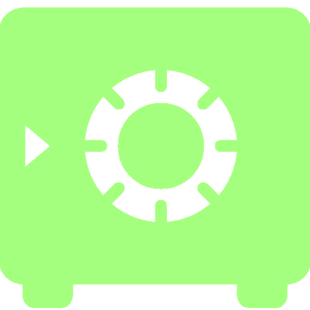

<!-- main app container -->

<nav class="navbar navbar-inverse">
  <div class="container-fluid">

    <div class="navbar-header">
      <button type="button" class="navbar-toggle collapsed" data-toggle="collapse" data-target="#navbar" aria-expanded="false" aria-controls="navbar">
        <span class="sr-only">Toggle navigation</span>
        <span class="icon-bar"></span>
        <span class="icon-bar"></span>
        <span class="icon-bar"></span>
      </button>
      <a class="navbar-brand" href="#" [routerLink]="['/welcome']" style="padding-top: 10px;">

        <div [ngSwitch]="(roleEmitter | async)">
          <div *ngSwitchCase="'USER'"></div>
          <div *ngSwitchCase="'ADMIN'"></div>
          <div *ngSwitchCase="'ROOT'"></div>
          <div *ngSwitchDefault></div>
        </div>


        <!--  -->
      </a>
    </div>

    <div id="navbar" class="navbar-collapse collapse">
      <ul class="nav navbar-nav">
        <li [routerLinkActive]="['active']" [routerLinkActiveOptions]="{exact:true}">
          <a [routerLink]="['/welcome']">Welcome</a>
        </li>
        <li [routerLinkActive]="['active']" [routerLinkActiveOptions]="{exact:true}">
          <a [routerLink]="['/home']" >Home</a>
        </li>
        <li [routerLinkActive]="['active']" [routerLinkActiveOptions]="{exact:true}">
          <a [routerLink]="['/about']">About</a>
        </li>
      </ul>

      <ul class="nav navbar-nav navbar-right">
        <li>
          <a *ngIf="(loggedInEmitter == null) || !(loggedInEmitter | async)" [routerLink]="['/login']">
            <span class="glyphicon glyphicon-log-in"></span> Login
          </a>
          <a *ngIf="(loggedInEmitter | async)" (click)="logout()">
            <span class="glyphicon glyphicon-log-out"></span> Logout
          </a>
        </li>
      </ul>


    </div><!--/.nav-collapse -->
  </div>
</nav>


<div class="container">

  <router-outlet></router-outlet>

</div>

<footer class="container-fluid text-center">
  <alert></alert>
</footer>


